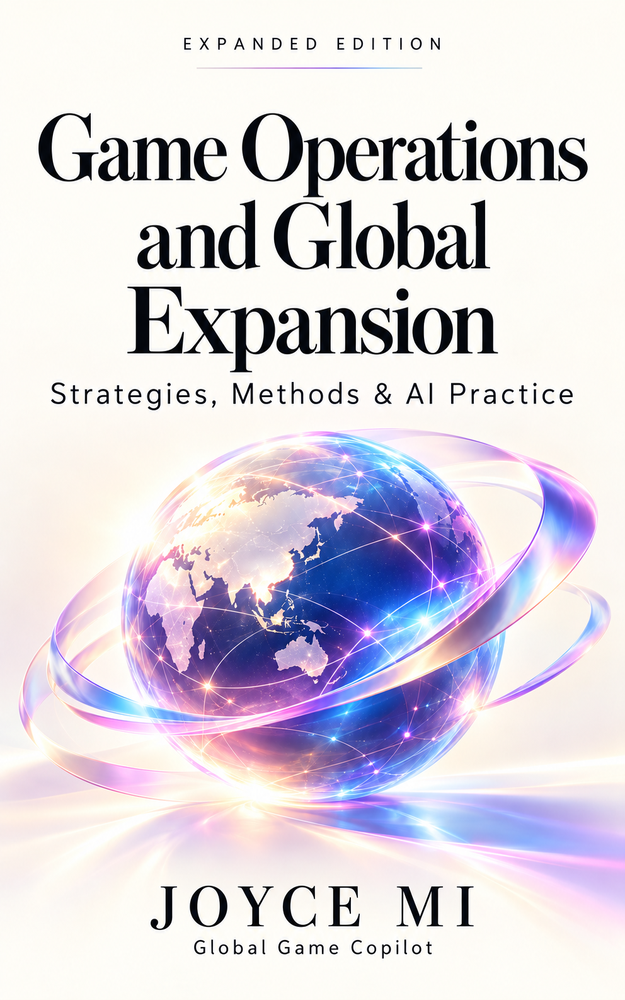

See the whole operating picture.
Connect player experience, product systems, data and economics. Clarify the assumptions behind a decision and who owns its outcome.
Strategies, Methods & AI Practice
Connect product, players, data, publishing and teams. Make the decisions that turn a game into a business—and bring that judgment into the age of AI.
English ebook · Expanded Chinese ebook · Two-book bundle

For people responsible for a game’s product, players, publishing and commercial decisions. Read the preview, see the planned scope, and choose the language that fits your work.
Connect player experience, product systems, data and economics. Clarify the assumptions behind a decision and who owns its outcome.
Distinguish prototype, market test, launch and live operations. Decide what evidence is needed before the next commitment of resources.
Assess audience, platform, genre and team conditions. Build a market-entry judgment suited to the product and its operating economics.
Connect requirements, tools and sources to artifacts, human judgment and revision. Follow current practice with its failures, corrections and ongoing tests.
Remastered and expanded: the original operating material, a clearer full-book structure, and current AI-native global game operating practice.
The English edition is separately edited for international readers. The two ebooks share the operating structure; each is a complete language edition.
Responsibility, lifecycle decisions, metrics and team delivery.
Chapters 1–4 → 10–15Genre selection, market entry and operating conditions.
Chapters 3–4 → 5–9 → 12–15Apply operating methods, verify AI delivery and design real tests.
Chapters 1–4 → 16–19 → 20–22The expanded edition brings the original source material into a new structure and adds Joyce’s current AI practice. Explore the full-edition outline below.
A substantial preview of the operating perspective: responsibility, cross-functional decisions, the product lifecycle, and the relationship between players, revenue and profit.
These are preview drafts. The complete 24-chapter edition is in development.
Read the preview in your browser →Read English and Chinese side by side →Bilingual schematic drafts for chapters 1–4 and 18, awaiting author review. Open a figure to explore it. These are frameworks, with no historical company data.
By 艾小米 (Joyce Mi) · China Machine Press. A useful choice for paper annotation and team reading of the original operating framework.
ISBN 978-7-111-75037-6
See the publisher’s original-book listing →The new ebooks are sold by GGC. Ebook orders do not include a print copy or an automatic upgrade from the original edition.
A one-time purchase of the complete edition. Full EPUB delivery to the email you enter at checkout on 31 January 2027.
The expanded edition in English. One EPUB ebook, including current AI practice.
Preorder not enabledThe reworked, expanded Chinese edition with current AI practice. One Chinese EPUB ebook.
Preorder not enabledBoth complete editions: English and expanded Chinese, delivered as two EPUB ebooks.
Preorder not enabledPaid preorders are charged once, in full, at checkout. The full manuscripts are in development; the current downloads contain the opening and chapters 1–4 only. Seller: GGC Innovation Tech Co., Limited.
Full refund on request any time before delivery. If delivery is delayed, you may choose to wait or receive a full refund. Use the seller contact at checkout or on your Stripe receipt to request a refund.
The complete EPUB ebook in the language you select. The bundle includes both the complete English and expanded Chinese ebooks. The four-chapter previews are freely available here.
Full ebook delivery is scheduled for 31 January 2027, to the email you enter at checkout. GGC manages delivery from the paid order record. Keep your Stripe order reference for order questions.
The opening and first four chapters are drafted. The complete edition is in development against the 24-chapter outline above, including expanded material and current AI practice.
For order questions or cancellation requests, contact GGC through the seller contact shown at checkout or on your Stripe receipt. GGC’s business support telephone is +852 5108 4495.